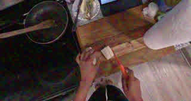

CASE 26
听评有分歧厨房备菜音画修复
26 秒厨房切豆腐实拍与新编器乐。复用原题强画面、强音频损伤和视觉 70 / 音频 30 的评分合同。
39.0464 / 70视觉评定
9.3359 / 24音频自动项
54.3823 / 100计入听评满分后的总分上限

GPT-6.1-sol / high 用时 48 分 25 秒。四段画面 PSNR 提升 9.94–10.47 dB，音频 SNR 提升 5.28–5.96 dB。
残余杂音的首评和复核分歧使总分留空。画面有明显的木纹、手部与刀身细节损失。
播放完整修复成片
对照与评分口径
干净参考的原始视觉自动项为 60/60，音频自动项为 24/24。盲测提交通过修订层重放与音画一致性的自动硬门槛。音频听评共 6 分，视觉最低通过门槛为 42 分。
CaptainCook4D 素材来源CASE 10
读取结果中国手语双语字幕
CE-CSL test 切分的 23 个新片段，9 位表达者，约 160 秒。三次盲测均使用 xhigh、不限时，评分沿用 Harbor 验证器。
| 答卷 | 总分 | 封顶前 | 语义 / 65 | 双语 / 8 | 时序 / 12 | 可读 / 5 | 交付 / 5 | 置信 / 5 | 状态 |
|---|---|---|---|---|---|---|---|---|---|
| 读取中 | |||||||||
语义由 GPT-6-astra/high 按数据集标注和源视频抽帧评审。
CE-CSL 原始仓库CASE 07
读取结果按导播口令提取人物
两个 4 秒双人镜头。每段的独立英语导播轨决定保留左侧或右侧人物，交付绿底视频。
视觉公式沿用原题的两道门槛和 30/70 边缘 IoU。片段 1 为 74.85，片段 2 为 85.05。
服务器试验使用可重建的命令行工作流，试验未提交 Resolve 工程，完整交付检查未通过，正式分留空。
原题与 Resolve 合同